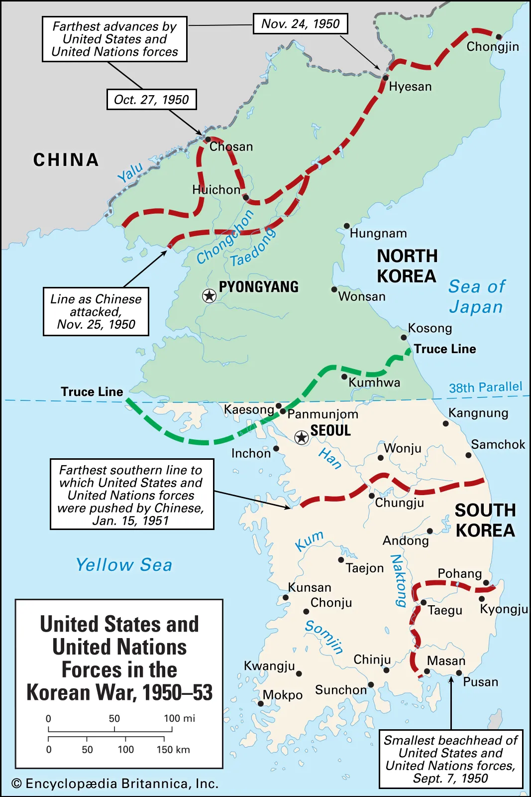
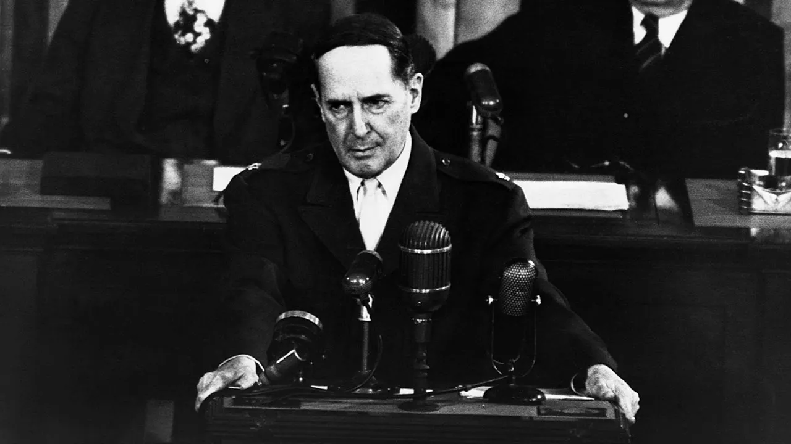

The Central Question
- How did American signals invite North Korean aggression?
- Why did military victory at Inchon become strategic catastrophe?
- What did Truman vs. MacArthur really argue about?
- What institutions did "stalemate" permanently create?
Section I
How did the United States signal that Korea was expendable?
A Line That Was Never Meant to Last
- Korea liberated from Japan in 1945 — divided at 38th parallel as a temporary surrender line
- South (ROK): Syngman Rhee — anti-communist, autocratic, militarily weak
- North (DPRK): Kim Il-sung — Soviet-trained, heavily armed, ideologically driven
- By 1949 U.S. troops withdrew; South Korea's army trained for internal security, not war

Korea divided at the 38th parallel · Public Domain · Wikimedia Commons
The Acheson Perimeter Speech
- January 12, 1950 — Secretary of State Dean Acheson defines U.S. defensive perimeter in the Pacific
- Listed: Japan, Ryukyus, Philippines
- Conspicuously absent: Korea and Taiwan
- In great-power signaling, omission functions as permission

Dean Acheson · U.S. Secretary of State · 1949 · Public Domain
Acheson's Words
How Adversaries Read the Signal
- Had previously restrained Kim Il-sung's requests to invade
- Acheson's speech = green light
- Gave authorization in weeks following the speech
- Post-Soviet archives confirm his direct role
- Agreed to backstop the operation militarily
- Would intervene if Americans approached the Yalu River
- Riding triumph of Chinese Revolution (1949)
- Both sides read American ambiguity clearly
June 25, 1950: The Invasion
- 135,000 North Korean troops cross the 38th parallel at dawn — Soviet T-34 tanks the South cannot stop
- Seoul falls in three days; UN forces driven to a narrow perimeter around Pusan
- Truman authorizes air and naval support within hours; commits ground troops two days later
- Framed as a UN "police action" — legal advantage, but constrained U.S. freedom of action
⏸ Pause & Reflect
Was the American decision to withdraw from Korea in 1949 and omit it from the defensive perimeter a strategic blunder — or a rational prioritization of limited resources? What should determine which countries fall inside an alliance's defensive commitment?
Section II
When does a defensive war become an offensive one?
The Inchon Landing: September 15, 1950
- MacArthur's amphibious strike at Inchon — the port for Seoul, midway up the peninsula
- Extreme tides, treacherous channels, a window measured in hours
- Every Joint Chief expressed reservations — MacArthur overrode them all
- Result: North Korean supply lines severed; Seoul liberated within two weeks

Inchon Amphibious Operation · September 15, 1950 · Public Domain
The Decision to Cross the 38th Parallel
- With North Korea routed, the question arose: stop at the 38th parallel, or unify Korea under non-communist rule?
- MacArthur urged the advance north; Joint Chiefs approved; Truman signed off
- NSC-81 authorized crossing — with the caveat: don't approach the Manchurian or Soviet borders if it risks Chinese intervention
- The decision was unanimous — the qualifications were unenforceable
China Enters the War
- China issued repeated warnings — through the Indian ambassador in Beijing — that U.S. forces approaching the Yalu would trigger intervention
- MacArthur and the CIA dismissed the warnings as bluff
- Late October: first contact with Chinese "volunteers" — then they disappeared
- MacArthur called it weakness; it was reconnaissance
November 25–26, 1950: The Assault
- 300,000 Chinese troops struck across a broad front — one of the most effective surprise attacks in modern military history
- UN forces driven back in brutal fighting; some of the heaviest casualties of the war
- The Chosin Reservoir campaign — Marines fight their way out of Chinese encirclement in brutal winter
- The battle line eventually stabilized near… the 38th parallel — exactly where the war began
⏸ Pause & Reflect
The United States crossed the 38th parallel in October 1950 — transforming a defensive action into an attempt to unify Korea. Was this a legitimate war aim, or did it represent a strategic overreach that made a catastrophic Chinese intervention inevitable?
Section III
Truman vs. MacArthur — two visions of American power
MacArthur's Argument
- Chinese intervention transformed the war — the U.S. was now fighting the People's Republic of China, not a Soviet client
- Limiting action to Korea made no strategic sense — like fighting Germany while forbidding attacks on German supply lines
- Wanted to bomb Manchurian bases, blockade China's coast, use Nationalist forces from Taiwan
- Goal: full application of conventional and air power against an adversary that had chosen war

General Douglas MacArthur · Public Domain · Wikimedia Commons
No Substitute for Victory
Truman's Counter-Argument
- MacArthur's escalation risked war with both China and the Soviet Union — exactly what containment was designed to prevent
- Europe remained the primary Cold War theater; NATO was in its infancy; Soviet nuclear capability was growing
- Expanding to China could draw the Soviets in under their mutual defense treaty — turning a regional war into a world war
- Coalition problem: British, French, Canadian, Australian allies had no appetite for war with China — and said so explicitly
Insubordination and Dismissal
- MacArthur communicated directly with Republican congressional leaders to undercut administration policy
- Issued an unauthorized ultimatum to the Chinese commander — threatening escalation Truman had forbidden
- Wrote to Rep. Joseph Martin, who read it on the House floor: "no substitute for victory"
- April 11, 1951 — Truman relieved MacArthur of all commands

Truman and MacArthur at Wake Island · October 1950 · Public Domain
Old Soldiers Never Die

MacArthur addresses Congress · April 19, 1951 · Public Domain
The Taft Critique: A Deeper Dissent
- Fight the war we're in — fight it to win
- Full air, naval, and conventional power against China
- Limited war is a strategic contradiction
- The entire framework was wrong — A Foreign Policy for Americans (1951)
- No large land wars on the Eurasian continent
- Fighting without a declaration of war set a dangerous constitutional precedent
- Korea birthed the imperial presidency
What Korea Institutionalized
⏸ Pause & Reflect
General Bradley testified that MacArthur's strategy would have been "the wrong war, at the wrong place, at the wrong time, and with the wrong enemy." MacArthur argued there was "no substitute for victory."
Which argument is more persuasive — and what assumptions underlie each?
Section IV
What did the war produce — in lives, institutions, and outcomes?
NSC-68 and the National Security State
- NSC-68 (April 1950) called for defense spending to surge from ~$13 billion to $50 billion annually
- Truman had shelved it as unaffordable — Korea provided the political opening
- By 1953 the defense budget had tripled; NATO was permanently garrisoned with U.S. troops
- Result: permanent large military, defense-industrial complex, peacetime intelligence services — locked in

NSC-68 cover page · Declassified 1975 · Public Domain
The Arithmetic of Stalemate
- 36,516 dead
- 103,284 wounded
- ~23,000 killed in combat
- More than the first 8 years of Vietnam combat deaths
- 700K–1M+ South Korean military dead
- 1–3 million civilian dead
- ~400,000 North Korean military dead
- Nearly every major city reduced to rubble
- 150,000–400,000 military dead
- Official figures never reliably disclosed
- Total war dead: likely over 3 million
Measuring the Outcome
- South Korea survived communist conquest
- Over four decades: became a prosperous, democratic, technologically advanced nation of 50 million
- Containment demonstrated operational meaning
- The Kim dynasty remained in power — intact
- Peninsula divided at roughly the same line where the war began
- North Korea: eventual nuclear weapons, one of the most repressive governments on earth
The Armistice: July 27, 1953
- Achieved under Eisenhower — elected in 1952 partly on the promise to end the war
- Eisenhower signaled through back channels: continued Chinese intransigence might result in nuclear use
- The key sticking point: prisoner repatriation — two additional years of fighting over the principle
- Irony: Ike used the threat of exactly the escalation Truman had refused — to achieve Truman's limited outcome

Armistice signing at Panmunjom · July 27, 1953 · Public Domain
⏸ Pause & Reflect
NSC-68 called for permanent large-scale military spending to contain Soviet power. Was the Korean War's domestic legacy — a permanent military establishment, a defense-industrial complex, executive war-making authority — a necessary cost of Cold War competition, or a dangerous distortion of American constitutional order?
Section V
Korea's legacy — and why the "Forgotten War" was never truly forgotten
The "Forgotten War" and Its Conservative Reclamation
- Sandwiched between the mythologized triumph of WWII and the trauma of Vietnam — Korea is the war Americans know happened but cannot describe
- Conservative revisionism — Burnham, Buckley, Podhoretz — sought to recover its significance
- Their argument: a moment of overwhelming American superiority, squandered by accepting stalemate
- The armistice: not strategic accommodation — but a failure of political will
The Road from Korea to Vietnam
- The limited-war doctrine codified in Korea became the operating template for Vietnam
- Same logic: calibrate force to deny enemy victory, not achieve American victory; manage escalation to avoid Soviet/Chinese intervention; treat coalition support as a constraint
- McNamara and Bundy explicitly drew on Korean precedents — without always recognizing them
- MacArthur, in 1962, reportedly warned Kennedy against committing ground forces to a land war in Asia
The Moral Stakes of Stalemate
- North Koreans who remained under Kim Il-sung did not achieve South Korea's democracy or prosperity
- They endured totalitarianism, famine, and one of the most repressive prison states in modern history
- The conservative argument: the disagreement was about means, not about the reality of what was being contained
⏸ Pause & Reflect
The Korean War established the template of "limited war" — fighting not to win decisively, but to prevent the enemy from winning. Is limited war a strategically sound approach to Cold War competition — or does it merely prolong conflicts without achieving lasting security?
Closing: The Unresolved Architecture
- South Korea survived — succeeded
- Containment proved it had operational meaning
- A democratic South Korea is the result
- Aggressor state survived — failed
- North Korea's regime persisted, eventually went nuclear
- No decisive consequence for communist expansion
The Question Korea Leaves Open
Is there a form of limited war that can achieve sustainable strategic objectives — or does the logic of limitation inevitably produce outcomes that satisfy no one and resolve nothing?
Truman said yes. MacArthur said no. Taft said the question was wrong.
The subsequent history — Vietnam, Iraq, Afghanistan — suggests the question remains unresolved.